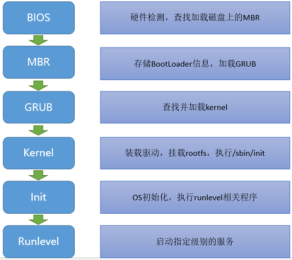

系统
简述 Linux 开机启动的过程？

- 电脑接通电源，电脑开始执行 BIOS（基本输入输出系统 Basic I/O System）的 POST（上电自检 Power On Self Test）过程
- BIOS
- 是一个固件（嵌入在硬件中的软件），BIOS 程序存放在断电后内容不会丢失的只读内存中
- 是开机的时候计算机执行的第一个程序，这个程序知道可以开机的磁盘，并读取磁盘第一个扇区的主要开机记录（MBR）
- POST
- 检查 CPU 、内存和其他硬件，若没有异常就开始加载 BIOS 程序到内存当中
- BIOS
- 读取 MBR 的引导文件（grub，lilo）
- MBR
- 存储于磁盘的头部，大小为 512 Bytes，其中，446 Bytes 用于存储 BootLoader 程序，64 Bytes 用于存储分区表信息，最后 2 Bytes 用于 MBR 的有效性检查
- 主要开机记录（MBR）中的开机管理程序提供以下功能
- 选单
- 载入核心文件
- 转交其它开机管理程序
- GRUB(Grand Unified Bootloader)，多系统启动程序，查找并加载 Kernel
- MBR
- 引导 Linux 内核，GRUB 将 Kernel 读进内存
- Kernel 以只读方式挂载根文件系统
- 当根文件系统被挂载后，开始装载第一个进程（用户空间的进程）
- 执行
/sbin/init，之后就将控制权交接给了 init 程序
- 运行第一个进程 init（进程号永远为1）
- 进行 OS 初始化操作
- 启动指定级别的服务，不同的级别会启动的服务不一样
- Linux的启动级别分为以下几种
- 关机模式
- 单一用户模式（直接以管理员身份进入）
- 多用户模式（无网络）
- 保留
- 多用户模式（图形界面）
- 重启
- Linux的启动级别分为以下几种
- 运行终端，输入用户名和密码
加载 BIOS–>读取 MBR–>Boot Loader–>加载内核–>用户层 init 一句 inittab 文件来设定系统运行的等级(一般 3 或者 5，3 是多用户命令行，5 是界面)–>init 进程执行 rc.syninit–>启动内核模块–>执行不同级别运行的脚本程序–>执行/etc/rc.d/rc.local(本地运行服务)–>执行/bin/login,就可以登录了。
Linux 系统是由那些部分组成？
- Linux 系统内核
- Shell
- 文件系统
- 应用程序
硬链接和软链接有什么区别？
- 硬链接（hard link）：硬链接是有着相同
inode号仅文件名不同的文件。一个inode对应多个文件名，即：一个文件拥有多个文件名- 文件有相同的
inode和data block - 不可跨文件系统
- 只能对已存在的文件进行创建
- 不能对目录进行创建
- 删除一个硬链接文件并不影响其他拥有相同
inode的文件 - 创建：
ln abc cde
- 文件有相同的
- 软链接（soft link / symbolic link）：文件用户数据块中存放的内容是另一文件的路径名的指向
- 系统创建一个链接文件，该文件指向它所要指向的文件
- 拥有自己的文件属性及权限等（创建了新的
inode） - 可跨文件系统
- 可对不存在的文件或目录创建软链接
- 可对文件和目录进行创建
- 删除软链接不影响被指向的文件，但删除被指向的文件，则相关软链接被成为死链接（dangling link）
- 创建：
ln -s abc cde
inode 包含哪些信息？
- 权限 (read/write/excute)
- 拥有者与群组 (owner/group)
- 容量
- 时间信息
- 建立或状态改变的时间 (ctime)：status time 文件的状态（权限、属性）更新就会更新
- 最近一次的读取时间 (atime)：access time 读取文件时就会更新
- 最近修改的时间 (mtime)：modification time 文件的内容更新就会更新
- 定义文件特性的旗标 (flag)，如 SetUID...
- 该文件真正内容的指向 (pointer)
⚠️注：
- 建立一个目录时，会分配一个
inode与至少一个 block。block 记录的内容是目录下所有文件的inode编号以及文件名 - 文件的
inode本身不记录文件名，文件名记录在目录中，因此新增文件、删除文件、更改文件名这些操作与目录的 w 权限有关